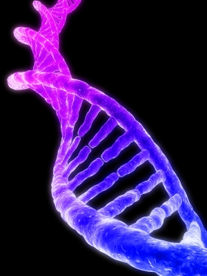
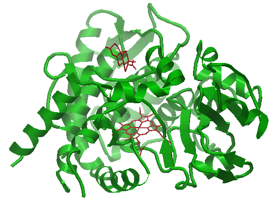

Molecular biology is the branch of biology that deals with the molecular basis of biological activity. This field overlaps with other areas of biology and chemistry, particularly genetics and biochemistry. Molecular biology chiefly concerns itself with understanding the interactions between the various systems of a cell, including the interactions between the different types of DNA, RNA and protein biosynthesis as well as learning how these interactions are regulated.|for more|

Proteins are organic compounds that contain the element nitrogen as well as carbon, hydrogen, and oxygen. Proteins are the most diverse group of biologically important substances and are often considered to be the central compound necessary for life. In fact, the translation from the Greek root word means first place.|for more|
